Abstract
This field note reports, based on an ongoing study on technical design education in São Paulo (Brazil), the conditions for approaching the material culture of schools through the consolidation of their school heritage. Examples drawn from institutional collections are mobilized, considering their modes of constitution and their current status. Beyond these paradigmatic cases, it is argued that schools tend not to prioritize the preservation of students’ everyday work and teachers’ pedagogical developments. As a result, the need to resort to personal archives—and often to chance—becomes evident in order to locate significant materials during the research process.
Keywords
Introduction
On September 28, 1911, through Decree No. 2,118-B, which organized and regulated the establishment of vocational education institutes in the state of São Paulo, institutions now known as Escola Técnica Carlos de Campos and Escola Técnica Getúlio Vargas were founded. At the time, designated respectively as the Women's Vocational School and the Men's Vocational School, these institutions were established as the first vocational education schools in the state (Mattos, 2023). Located in the Brás district—historically associated with a strong working-class and industrial presence, and more recently with commercial activity (Torres, 1985)—these schools played a central role in the technical training of workers, linking directly to the city’s productive dynamics.
Since their establishment, these institutions were organized according to a gender-based division and, during the 1960s, became coeducational schools. They admitted students from the age of twelve. In the case of what is now the Escola Técnica Carlos de Campos, it is possible to trace a genealogy connecting historical practices to contemporary programmes, particularly in the field of Fashion. Training in Clothing, present since 1911, was central to the education of female students, including activities such as whitework lace-making and hat design. From the 1930s onwards, a trajectory associated with the field of design also begins to emerge: the Painting course, already in existence during this period, shows resonances that extend to the Communication Drawing course, created in 1972 and later renamed Graphic Design in the 2000s. Within this process of diversification, the Decoration course, introduced in 1977 (later renamed Interior Design), further reinforces the expansion of design practices within the school (Stephan, 2019).
This Field Note draws on research conducted as part of a master’s degree. The study combines oral history with documentary sources, based on five interviews and visits to two institutional memory centres. During the data collection process on these institutions, it was possible to retrieve relevant information through official documents, such as records from the Official Gazette of the State of São Paulo, as well as through oral history. However, when considering the materials effectively safeguarded by the institutions, a significant scarcity becomes apparent.
Material Culture and School Heritage
This gap is related, in part, to the treatment given to the collections over time, particularly an episode that occurred in the 1990s, when a large portion of the school’s historical holdings is reported to have been destroyed. According to accounts, one of the directors ordered the burning of documents and objects, including an internal museum dedicated to so-called “feminine technologies” (Barreto, 2007). This museum, conceived by teacher Maria Vitorino and director Laia Bueno, brought together pre-1930 productions related to textile production (Oliveira, 1992). This episode is emblematic for understanding not only material loss, but also the criteria—or lack thereof—that guide institutional preservation.
At present, the schools maintain “memory centres”, which function as school archives linked to a state agency in São Paulo through the Centro Paula Souza—the public body responsible for managing the state’s technical schools. These centres aim to preserve and disseminate the history of the institutions and their educational processes. In addition to the documents and records produced throughout their history, schools themselves constitute significant historical and cultural heritage. Such heritage may be embodied in their architectural ensembles, as in the case of Carlos de Campos Technical School (Figure 1), as well as in artistic works created and preserved within the school environment, such as those found at Getúlio Vargas Technical School (Figure 2). However, their operational dynamics reveal certain tensions: the management of collections is subject to a rotation system in which teachers are appointed as coordinators of the memory centres, resulting in discontinuities in preservation criteria and practices. In addition, there are institutional incentives for specific activities, such as the collection of oral history accounts and the production of materials for public dissemination.
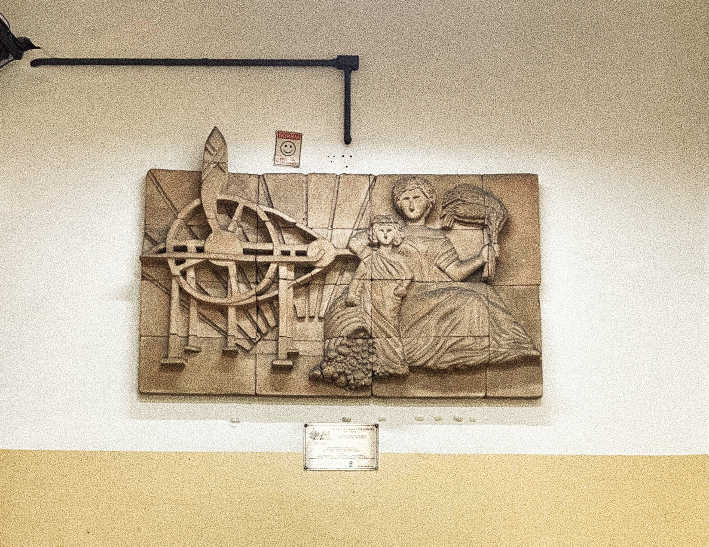
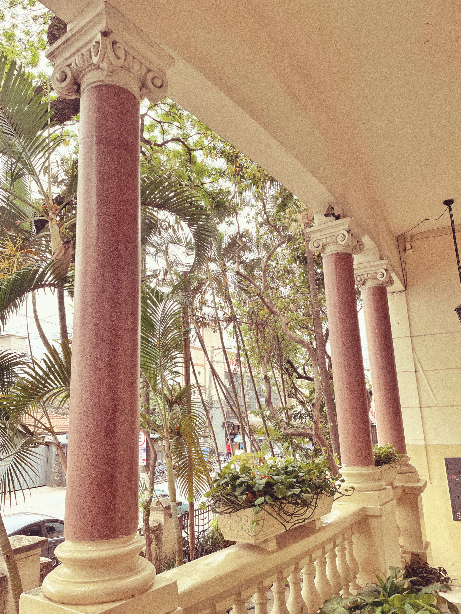
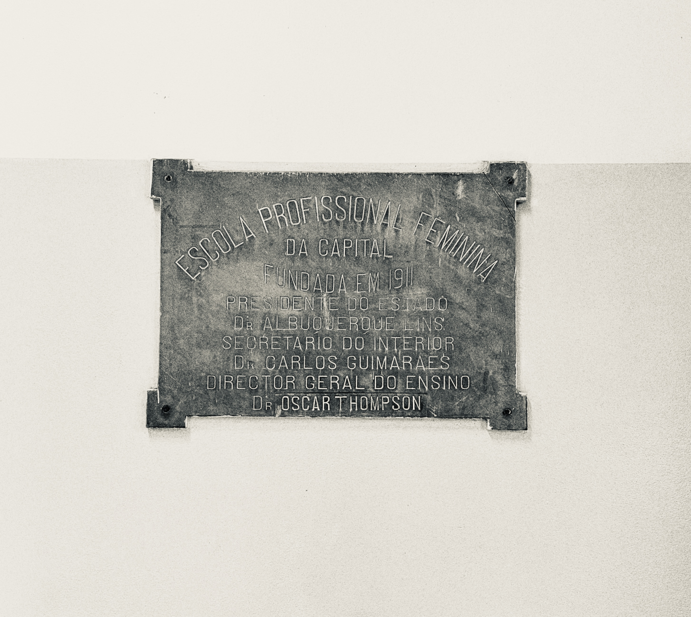
![Figures 2-1, 2-2 and 2-3. Sculpture collection held by Getúlio Vargas Technical School. From left to right: Ferdinand Frick’s painted plaster relief The Arrival of the Franciscans in Brazil (1932), currently preserved in the school’s Memory Center; Instruction, a painted plaster sculpture created by Ferdinand Frick in 1924 for a monument dedicated to Dom João Nery and bearing the inscription “Instruction, Faith and Charity”; a painted plaster statue of Jesus Christ dating from the 1920s; and a painted plaster bust of former President Getúlio Vargas, created by Laurindo Galante in 1940, after whom the school is named. Photos by the author.](../../../media/field-notes/material-culture-and-school-heritage/figures/figure-2-1.jpg)
![Figures 2-1, 2-2 and 2-3. Sculpture collection held by Getúlio Vargas Technical School. From left to right: Ferdinand Frick’s painted plaster relief The Arrival of the Franciscans in Brazil (1932), currently preserved in the school’s Memory Center; Instruction, a painted plaster sculpture created by Ferdinand Frick in 1924 for a monument dedicated to Dom João Nery and bearing the inscription “Instruction, Faith and Charity”; a painted plaster statue of Jesus Christ dating from the 1920s; and a painted plaster bust of former President Getúlio Vargas, created by Laurindo Galante in 1940, after whom the school is named. Photos by the author.](../../../media/field-notes/material-culture-and-school-heritage/figures/figure-2-2.jpg)
![Figures 2-1, 2-2 and 2-3. Sculpture collection held by Getúlio Vargas Technical School. From left to right: Ferdinand Frick’s painted plaster relief The Arrival of the Franciscans in Brazil (1932), currently preserved in the school’s Memory Center; Instruction, a painted plaster sculpture created by Ferdinand Frick in 1924 for a monument dedicated to Dom João Nery and bearing the inscription “Instruction, Faith and Charity”; a painted plaster statue of Jesus Christ dating from the 1920s; and a painted plaster bust of former President Getúlio Vargas, created by Laurindo Galante in 1940, after whom the school is named. Photos by the author.](../../../media/field-notes/material-culture-and-school-heritage/figures/figure-2-3.jpg)
During a visit to a memory centre affiliated with Centro Paula Souza, it was possible to identify the coordinating role played by a teacher responsible for overseeing and guiding these centres. Her work involves distributing tasks among schools, encouraging academic production, and supporting efforts to systematize preservation practices. It is worth noting that this teacher previously led the memory centre of Escola Técnica Carlos de Campos and holds a degree in Chemical Engineering. While it is not possible to establish a direct relationship between her academic background and the composition of the collections, this circumstance may suggest one of the factors shaping the preservation of material culture within these centres. In particular, objects related to the teaching of chemistry, nutrition, and other technical fields appear to be relatively prominent in the collections. This observation may reflect, among other factors, the histories of the professionals involved in their preservation.
In this sense, rather than an individual analysis, what is at stake is the very process of the institutionalization of memory: who decides what should be preserved? Based on the research experience, it becomes evident that there are no clearly defined or shared criteria to guide this selection. As a consequence, certain fields—such as the teaching of drawing, art, and design—appear only marginally or in fragmented ways within institutional collections.
Nevertheless, it was possible to access some relevant data (Figures 3 and 4), particularly related to the trajectory of Professor Jaty Silva, an important figure in the history of technical drawing education in São Paulo. His career began with the completion of the Painting course at Escola Técnica Getúlio Vargas in 1947 (Saito, 2010). After his training, he worked as a draughtsman at the Department of Vocational Education of the State of São Paulo. On October 25, 1954, he resigned from this position to take up, through a public competitive examination, the role of Painting teacher at the Industrial School “Fernando Prestes” in the city of Sorocaba. On March 16, 1956, he joined Escola Técnica Carlos de Campos, where he consolidated his teaching career until the mid-1980s. Silva also worked as a professor at the Panamericana School of Art, a pioneering school in art education for advertising and graphic design, and he is considered one of the main agents of the transition that would culminate in the creation of the Communication Design course in the 1970s.
However, the presence of his work in institutional collections (Figures 3 and 5) reveals an important aspect of the ways in which these materials are currently preserved and contextualized. Rather than being explicitly identified in the collection as significant contributions to material culture or to the history of design education, the materials appear to be preserved primarily in relation to their institutional and vocational context. In the case of the book covers he produced, their inclusion in the collection appears to be associated with their connection to vocational education, while their authorship and graphic characteristics receive less explicit recognition. Although the available evidence does not allow us to determine the specific criteria that guided their preservation, this case may suggest that institutional collecting practices tend to foreground themes and educational functions, potentially overshadowing aspects of visual materiality, authorship, and creative processes.
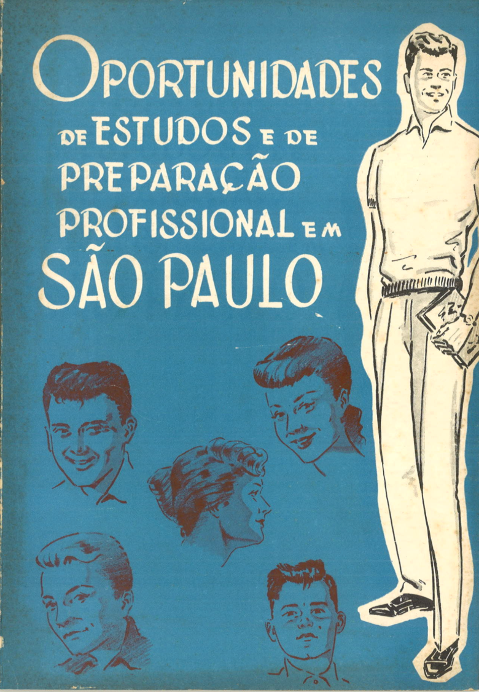
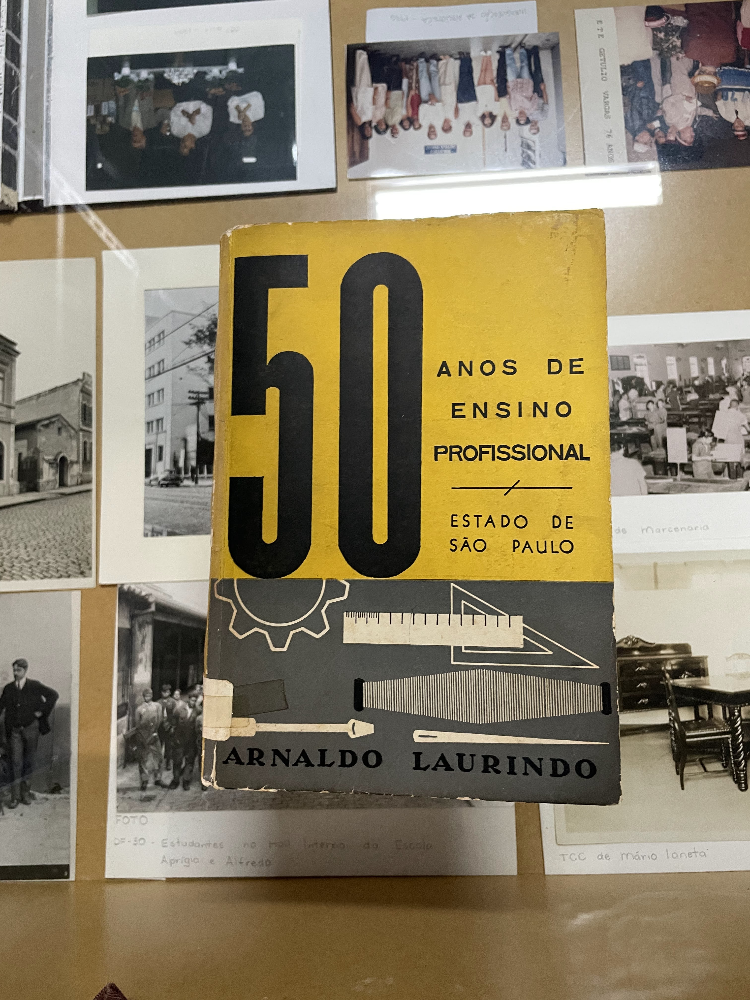
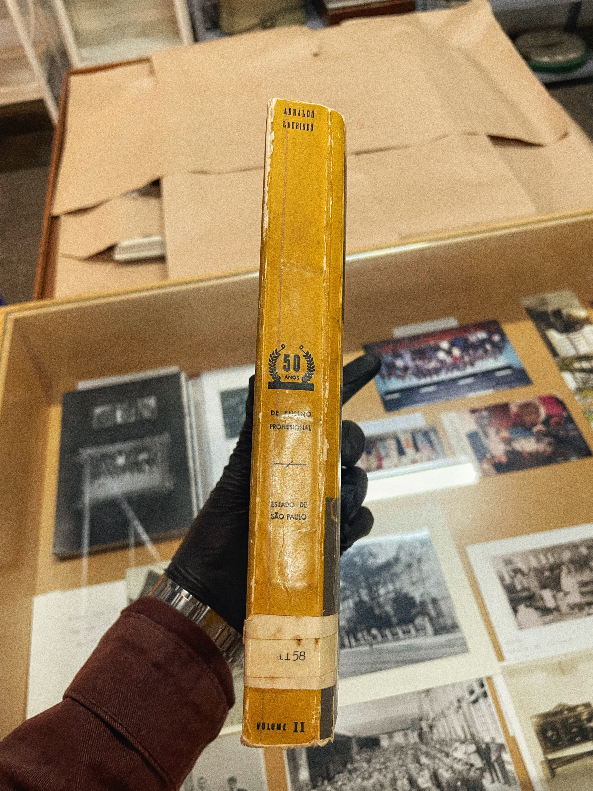
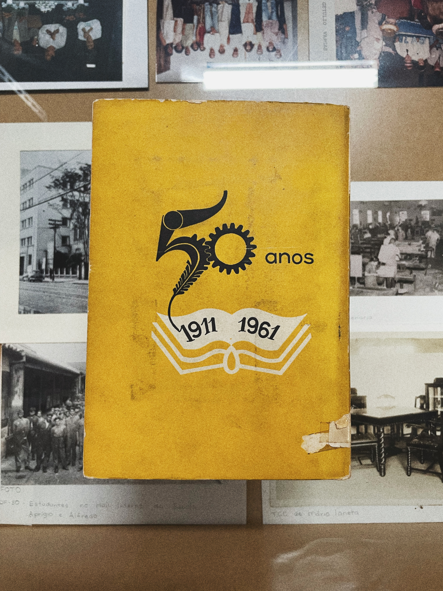
This logic becomes even more evident when one considers the absence of other types of materials, such as drawings, classroom exercises, paintings, tools, and various productions by teachers and students. In this context, the personal collections of former students and teachers prove to be more productive for research. It was through these collections, for example, that it was possible to locate drawings by Jaty Silva himself (Figure 5), as well as his business card (Figure 6). This situation shifts the investigation beyond institutional boundaries, making the research process dependent on the availability of individuals and on the contingent preservation of such materials.
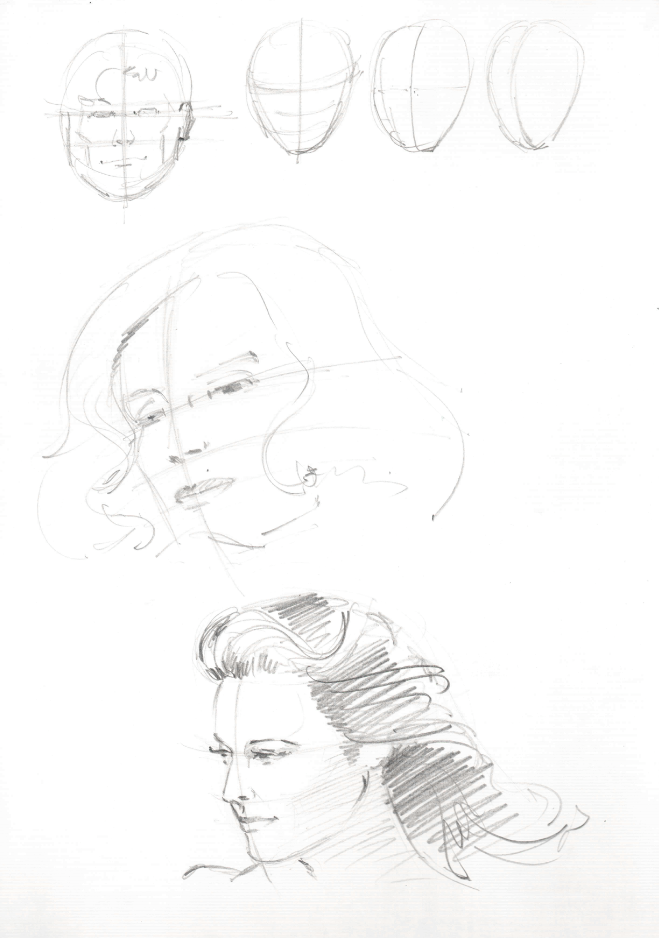
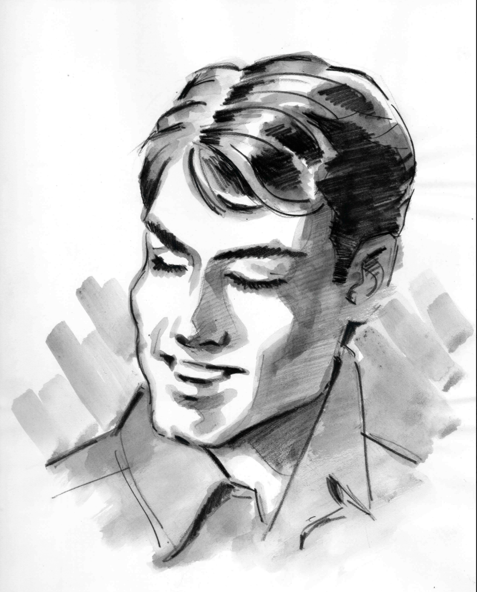
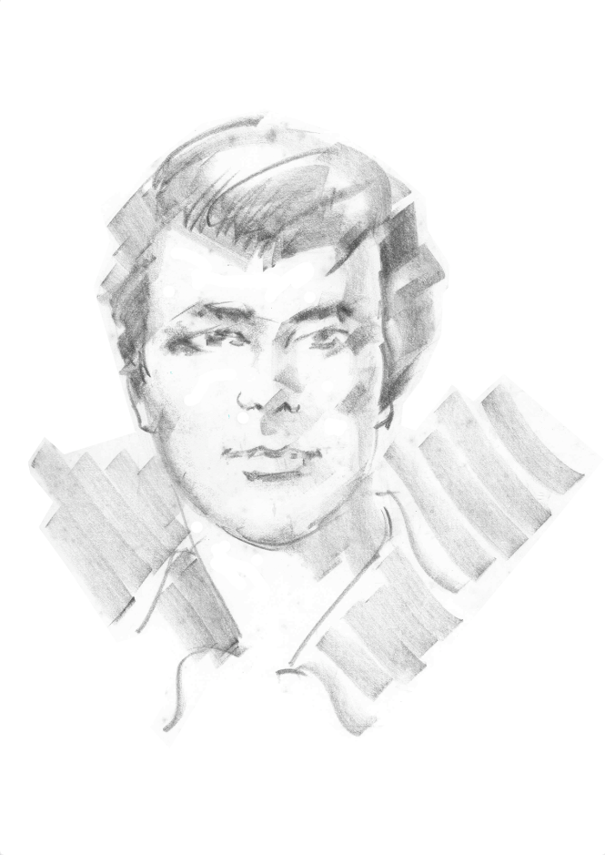
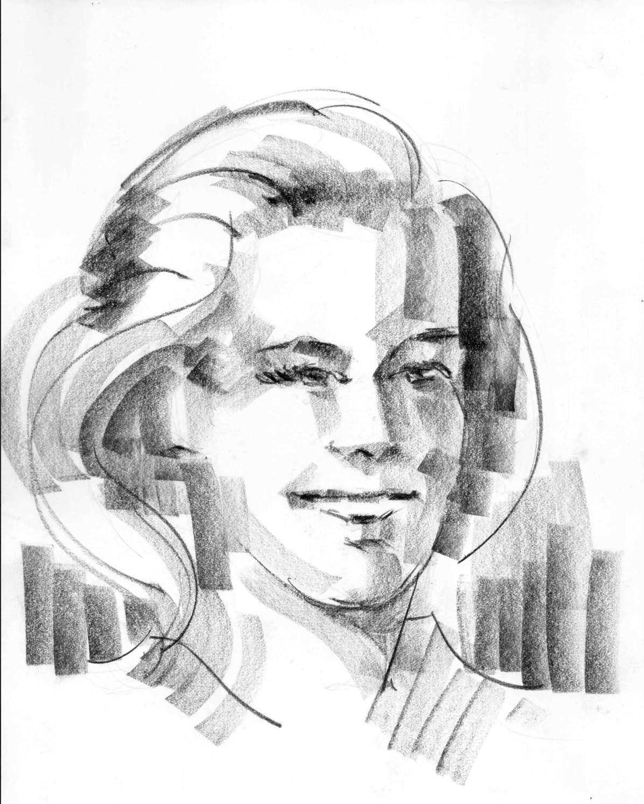
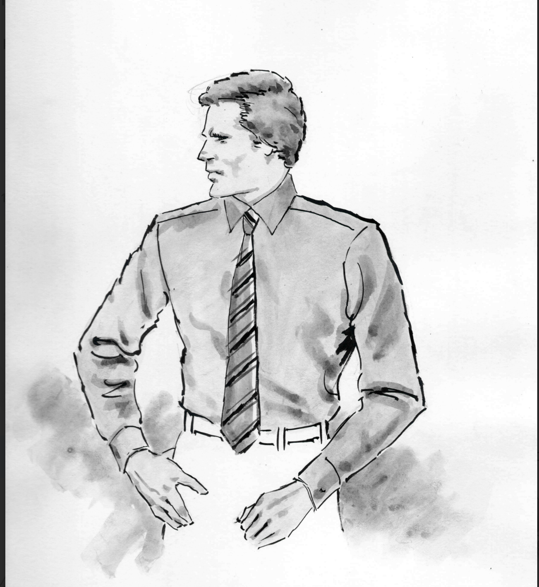
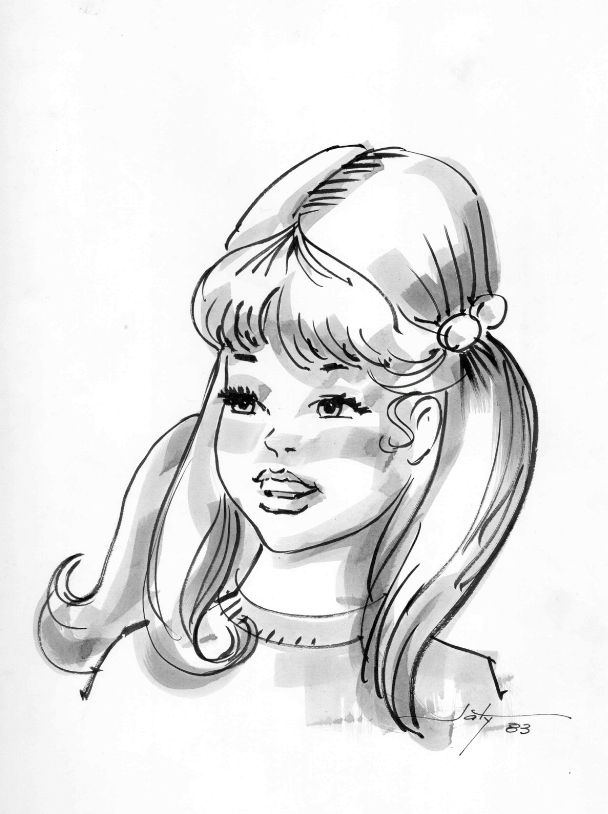
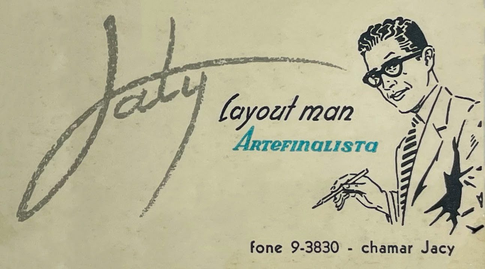
This scenario highlights the urgency of reflecting on school heritage and its conditions of preservation. As Mogarro et al. (2010) argue, educational heritage is not limited to buildings or administrative documents, but encompasses a broad and heterogeneous set of elements, including internal spaces, equipment, teaching materials, scientific instruments, instructional manuals, students’ work, and school notebooks. This expanded definition allows us to understand the school as a space that produces its own material culture, in which everyday life plays a structuring role. However, when confronting this conception with the reality observed in institutional collections, a significant mismatch becomes apparent: while the breadth of school heritage is theoretically acknowledged, preservation practices tend to privilege only a portion of this universe, often linked to official records or more institutionalized fields. The cases presented here illustrate that the absence of design-related materials from institutional collections is not merely the result of accidental loss, but also reflects broader processes through which school memory is organized and legitimized.
This tension can be better understood through the perspective of Pollak (1992), for whom memory is always the result of social processes of selection and legitimation. Memory, in this sense, is not a neutral repository of the past but a field of dispute in which certain groups, practices, and narratives gain visibility, while others are silenced. The sources with which historians work—whether material, written, or oral—are therefore products of these selections, constituting what we might call the “survivals” of memory. Applied to the context of school heritage, this perspective makes it possible to understand that the absence of certain traces—such as drawings, exercises, experiments, or everyday objects—is not due to their historical irrelevance, but to their disqualification as forms of memory worthy of preservation. Thus, the problem lies not only in documentary loss but in the processes themselves that determine what deserves to be preserved. In this scenario, the researcher’s task also becomes that of identifying these gaps as meaningful data, revealing the implicit hierarchies that structure institutional memory.
This discussion is directly related to the notion of the “hidden curriculum,” developed by Apple (2019). For the author, the school transmits not only formal content, explicitly defined in curricula, but also values, norms, and worldviews that operate diffusely in everyday school life. This set of practices and meanings constitutes an ideological dimension of education, often naturalized and therefore rendered invisible. When this perspective is applied to the field of school heritage, it becomes possible to argue that institutional collections are not merely repositories, but devices that materialize a particular vision of the curriculum—especially the explicit one. In this sense, what is preserved functions as a mirror of the hierarchies of knowledge legitimized by the institution: preserving certain objects, documents, or productions implies recognizing their value, while the exclusion of others contributes to their marginalization. Thus, the absence of material culture related to the teaching of art and design in collections is not merely an empirical gap, but an indication of how these fields may be historically positioned as secondary within the school.
In this way, preservation criteria come to operate as an ideological dimension of the curriculum itself. By defining what should be maintained as institutional memory, the school retrospectively determines what it considers valid knowledge, relevant practice, and meaningful experience. This implies recognizing that school collections actively participate in the construction of narratives about institutional identity. Within this process, everyday life tends to be underrepresented precisely because of its apparent banality and ephemerality, even within a setting that is privileged for the enactment of the formal and institutionalized curriculum. Yet it is at this everyday level that some of the richest traces of pedagogical practice are produced, particularly in fields such as art and design, where learning unfolds through experimentation, material production, and visual construction.
This perspective resonates with Michel de Certeau’s reflections on ordinary practices and their place within the writing of history. For Certeau, these practices continually reappear not only in subtle and implicit ways within scientific activity itself, but also in everyday actions which, despite lacking a legitimized discourse, nevertheless persist. As he argues, it is within these practices that “a know-how is exercised in which all the traces of the art of memory can be found” (Certeau, 1998, p. 165). Beyond formal structures and official records, everyday life preserves forms of knowledge, strategies, and experiences that frequently escape traditional mechanisms of documentation, yet remain essential for understanding the complexity of school life.
Therefore, although institutional memory is inevitably selective and privileges certain forms of knowledge through heritage processes, a conscious effort must be made to recognize the significance of everyday life. The challenge of preserving school heritage lies precisely in making visible those dimensions that are often obscured, understanding that their absence from collections does not imply an absence of existence or historical relevance.
Conclusion
This field note suggests that the preservation of school heritage might benefit from moving beyond exclusively formal documentation toward a more systematic incorporation of the material culture of everyday life. This implies recognizing drawings, exercises, pedagogical tools, and student productions as central, rather than peripheral, elements in the constitution of institutional memory. Although it is impossible to preserve the totality of such productions, the development of more conscious and critical criteria may help ensure that school collections more accurately reflect the complexity of the educational experience, encompassing both the hidden and the formal curriculum, as well as both major moments of institutional memory and ordinary daily practices. In this sense, preserving everyday life constitutes both a political and an epistemological act, as it acknowledges that the forms of teaching, learning, and knowledge production that structure the field of art and design are inscribed precisely in the materiality of ordinary practices.
References
Apple, M.W. (2019) Ideology and curriculum. 4th edn. New York: Routledge.
Barreto, C.M. (2007) Ensino de arte e profissionalização feminina: um diálogo com a Escola Profissional Feminina de São Paulo [Art Education and Women's Professionalization: A Dialogue with the São Paulo Women's Vocational School]. Master’s dissertation. Universidade Estadual Paulista, Instituto de Artes.
Certeau, M. de (1998) A invenção do cotidiano: 1. Artes de fazer [The Practice of Everyday Life: 1. Arts of Doing]. 3rd edn. Petrópolis: Vozes.
Mattos, M.F. (2023) “As Escolas Profissionais no Estado de São Paulo” [Vocational Schools in the State of São Paulo], Revista de Ensino em Artes, Moda e Design. Florianópolis, 7(1), pp. 1–24. doi: 10.5965/259446306712023e3271.
Mogarro, M.J., Gonçalves, F., Casimiro, J. and Oliveira, I.C. (2010) ‘Inventário e digitalização do patrimônio museológico da educação: um projeto de preservação e valorização do patrimônio educativo’ [Inventory and digitization of educational museum heritage: a project of preservation and valorisation], Revista História da Educação, 14(30), pp. 153–179.
Oliveira, S.T. (1992) Uma colmeia gigantesca: Escola Profissional Feminina de São Paulo – 1910/20/30 [A gigantic beehive: São Paulo Women’s Vocational School – 1910s/20s/30s]. Master’s dissertation. Pontifícia Universidade Católica de São Paulo.
Pollak, M. (1992) ‘Memória e identidade social’ [Memory and social identity], Revista Estudos Históricos, 5(10), pp. 200–212. Available at: http://bibliotecadigital.fgv.br/ojs/index.php/reh/article/view/1941/1080 (Accessed: 29 May 2026).
Saito, M.I. (2010) Os egressos da “GV” do Brás. Escola Técnica “Getúlio Vargas” (1911–1963). Monografia. Centro de Memória da Educação Profissional do Centro Paula Souza.
Stephan, A.P. (2019) O ensino de projeto de design no Curso Colegial de Desenho de Comunicação Iadê (1969–1987): um olhar histórico e reflexivo de sua existência [The teaching of design project in the Iadê Communication Drawing course (1969–1987): a historical and reflective perspective]. PhD thesis. Universidade de São Paulo, São Paulo.
Torres, M.C.T. (1985) O Bairro do Brás: Série História dos Bairros de São Paulo [The Brás Neighborhood: History of São Paulo's Neighborhoods Series]. 2nd edn. São Paulo: Departamento de Cultura da Secretaria de Educação e Cultura.
Author Bio
Lucas Magalhães Freire is a Brazilian design and art historian, critic, educator, and researcher based in São Paulo. He is currently an MSc candidate in Design at the Universidade de São Paulo, working within the History, Theory, and Criticism of Design research line, where his research focuses on the history and teaching of design in Brazil. Freire is also a lecturer at Senac São Paulo, teaching in undergraduate Graphic Design and postgraduate programmes in Art Education, Cultural Management, UX Design, and Neurodesign. He additionally works as a consultant on design and art projects related to culture and education.
Recommended Citation
Freire, L.M. (2026) "Material Culture and School Heritage: a field note on the challenges of research in the history of art and design education", Everyday Life: International Journal of Public Culture, Art and Design, 1(1), pp. 1-12.
Article URL: https://articles.everydaylifejournal.uk/articles/field-notes/material-culture-and-school-heritage/
Copyright
© 2026 The Author(s). Published by Everyday Life: International Journal of Public Culture, Art and Design. This is an open-access article distributed under the terms of the Creative Commons Attribution-NonCommercial 4.0 International Licence (CC BY-NC 4.0), which permits non-commercial use, distribution and reproduction in any medium, provided the original work is properly cited. Everyday Life is an independent open-access journal with no submission or publication fees.